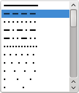
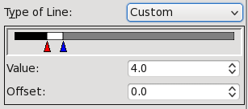
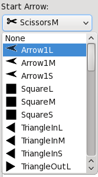
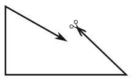
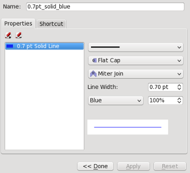

Working with Lines & Line Styles
Properties: Lines
 |
Here in the Line tab of the Properties palette is where we set the line attributes of the various kinds of lines used in Scribus, which includes:
- Straight lines (single line segments)
- Bezier curves
- Freehand lines
- Borders of Shapes and Polygons
- Borders of frames of all kinds – these must have a color assigned for these settings to show.
We are going to describe these Line tab items a bit out of order, since it seems to make more sense this way for demonstration purposes.
The bottom of our graphic here looks different from the default appearance, since in addition to the default No Style, we have created some Line Styles that we can use repeatedly in our document. This will be covered at the end of this section.
|
Edges and Endings
 |
This screenshot shows the choices for corners (Edges) and Endings of lines.
From left to right:
- Miter Join and Flat Cap
- Bevel Join and Square Cap
- Round Join and Round Cap
Since each of these is an independent choice, you will have 9 possible combinations. |
Type of Line and Line Width
| Here we see only a part of the extensive drop-down list for Type of Line choices.
In addition to a wide array of predetermined choices, at the bottom of the list is a choice, Custom, which brings up the dialog you see below. |
 |
| You can either manually move the sliders or use the spinboxes to make adjustments. If you have used Gradients in the Color tab, this slider should be familiar. Like gradients, not only can you adjust the transition points use see here, you can also add more by clicking the space underneath the slider – you will see a + appear next to the mouse cursor. The red triangle indicates the point for which the spinboxes apply. Remove points by click-dragging them off the slider (but you cannot have less than two).
As you can see, these spinboxes have no units, since they are relative to the width of the line. The Offset shifts your pattern along the line and thus helps to prevent a space from occurring at the beginning or at some transition point such as a corner.
|
 |
 |
The Line Width setting should need no explanation, but here to the left we see the effects of changing linewidth on the length and spacing of the same dash pattern, using linewidth settings of Hairline, 1.0 pts, and 2.0 pts respectively.
The Edge and Endings settings here are the same for each line as was used above, so as you can see especially with round joins and caps, these also apply to our dashes.
|
Start Arrow & End Arrow
|  |
Just as with Type of Line, we see in Start Arrow and End Arrow a quite extensive list of choices which you can discover on your own. Since these terms apply to opposite ends of a line, they can only be used with a line or an open figure, and therefore these buttons will be inactive with shapes, polygons, and frame borders.
Below we see what began as a shape but then was edited to break up the triangle, so that the arrows could be applied – obviously, some “arrows” aren’t arrows at all. |
|  |
Basepoint
We’ve left this setting for last since it’s a bit tricky. For any sort of line or figure, the initial settings in the X,Y,Z tab of Properties show the X-Pos and Y-Pos of the basepoint, which at first is the upper left corner of the frame or bounding box. In the case of a straight line, X-Pos and Y-Pos refer to the initial point from which the line was drawn. The other spinboxes in X,Y,Z show Width and Height of the bounding box – except for a straight line, which is defined by Width (i.e., length) only, plus the direction (Rotation) of the line, and its thickness.
This condition is true for the Line tab Basepoint setting of Left Point. If you change the Basepoint to End Points, the X,Y,Z tab now shows spinboxes for X1, Y1, and X2, Y2.
For a straight line, this means that X1 and Y1 refer to the starting point of the line, i.e., where the beginning of the line was when it was drawn. X2 and Y2 refer to the coordinates of the other end of the line.
The example below is for a straight line – where you can see that X-Pos = X1, and Y-Pos = Y1.
For anything more complex than a straight line, the values refer to the bounding box, in which case X1 and Y1 refer to the basepoint as set in the X,Y,Z tab, and the X2 and Y2 values refer to the width and height of the bounding box, and therefore will always be positive numbers.
| Basepoint: Left Point

|
Basepoint: End Points

|
Line Styles
 |
Now that we’ve explained various line attributes, it makes sense to talk about line styles.
In Working with Styles we discuss how to make text layout styles in Scribus. Here is our Style Manager dialog we saw there. If we click New, then choose Line Style from the drop-down list, we then expand the dialog to show the section for creating/editing line styles. |
|  |
Just underneath the Properties label, there are two buttons, one for adding a style (so you don’t have to keep going back to push the New button again), and the other to delete the highlighted style.
If you compare your choices here with those in the Line tab of the Properties palette, you see a more limited selection. In Line Type, there is no Custom setting. There are no arrow settings, so these will be applied later if desired.
What you do have here in addition are the choices for line color and line shading (saturation) that you would have had to make in the Color tab of the Properties palette.
|